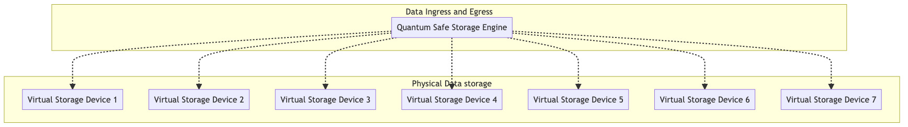

Quantum Safe Storage Algoritm

The Quantum Safe Storage Algorithm is the heart of the Storage engine. The storage engine takes the original data objects and creates data part descriptions that it stores over many virtual storage devices (ZDB/s)
Data gets stored over multiple ZDB's in such a way that data can never be lost.
Unique features
- data always append, can never be lost
- even a quantum computer cannot decrypt the data
- is spread over multiple sites, sites can be lost, data will still be available
- protects for datarot.
Why
Today we produce more data than ever before. We could not continue to make full copies of data to make sure it is stored reliably. This will simply not scale. We need to move from securing the whole dataset to securing all the objects that make up a dataset.
ThreeFold is using space technology to store data (fragments) over multiple devices (physical storage devices in 3Nodes). The solution does not distribute and store parts of an object (file, photo, movie...) but describes the part of an object. This could be visualized by thinking of it as equations.
Details
Let a,b,c,d.... be the parts of that original object. You could create endless unique equations using these parts. A simple example: let's assume we have 3 parts of original objects that have the following values:
a=1
b=2
c=3
(and for reference the part of real-world objects is not a simple number like 1 but a unique digital number describing the part, like the binary code for it 110101011101011101010111101110111100001010101111011.....). With these numbers we could create endless amounts of equations:
1: a+b+c=6
2: c-b-a=0
3: b-c+a=0
4: 2b+a-c=2
5: 5c-b-a=12
......
Mathematically we only need 3 to describe the content (=value) of the fragments. But creating more adds reliability. Now store those equations distributed (one equation per physical storage device) and forget the original object. So we no longer have access to the values of a, b, c and see, and we just remember the locations of all the equations created with the original data fragments. Mathematically we need three equations (any 3 of the total) to recover the original values for a, b or c. So do a request to retrieve 3 of the many equations and the first 3 to arrive are good enough to recalculate the original values. Three randomly retrieved equations are:
5c-b-a=12
b-c+a=0
2b+a-c=2
And this is a mathematical system we could solve:
- First:
b-c+a=0 -> b=c-a - Second:
2b+a-c=2 -> c=2b+a-2 -> c=2(c-a)+a-2 -> c=2c-2a+a-2 -> c=a+2 - Third:
5c-b-a=12 -> 5(a+2)-(c-a)-a=12 -> 5a+10-(a+2)+a-a=12 -> 5a-a-2=2 -> 4a=4 -> a=1
Now that we know a=1 we could solve the rest c=a+2=3 and b=c-a=2. And we have from 3 random equations regenerated the original fragments and could now recreate the original object.
The redundancy and reliability in such system comes in the form of creating (more than needed) equations and storing them. As shown these equations in any random order could recreate the original fragments and therefore redundancy comes in at a much lower overhead.
Example of 16/4

Each object is fragmented into 16 parts. So we have 16 original fragments for which we need 16 equations to mathematically describe them. Now let's make 20 equations and store them dispersedly on 20 devices. To recreate the original object we only need 16 equations, the first 16 that we find and collect which allows us to recover the fragment and in the end the original object. We could lose any 4 of those original 20 equations.
The likelihood of losing 4 independent, dispersed storage devices at the same time is very low. Since we have continuous monitoring of all of the stored equations, we could create additional equations immediately when one of them is missing, making it an auto-regeneration of lost data and a self-repairing storage system. The overhead in this example is 4 out of 20 which is a mere 20% instead of (up to) 400%.
Content distribution Policy (10/50)
This system can be used as backend for content delivery networks.
Imagine a movie being stored on 60 locations from which we can loose 50 at the same time.
If someone now wants to download the data, the first 10 locations who answer fastest will provide enough of the data parts to allow the data to be rebuild.
The overhead here is much more, compared to previous example, but stil order of magnitude lower compared to other cdn systems.
Datarot
Datarot cannot happen on this storage system.
Fact that data storage degrades over time and becomes unreadable, on e.g. a harddisk. The storage system provided by ThreeFold intercepts this silent data corruption, making that it can pass by unnotified.
see also https://en.wikipedia.org/wiki/Data_degradation
Zero Knowledge Proof
The quantum save storage system is zero knowledge proof compliant. The storage system is made up / split into 2 components: the actual storage devices use to store the data (ZDB's) and the Quantum Safe Storage engine.

The zero proof knowledge compliancy comes from the fact that all the physical storage nodes (3nodes) can proof that they store a valid part of what data the quantum safe storage engine (QSSE) has stored on multiple independent devices. The QSSE can validate that all the QSSE storage devices have a valid part of the original information. The storage devices however have no idea what the original stored data is as they only have a part (description) of the origina data, and have no access to the original data part or the complete origal data objects.